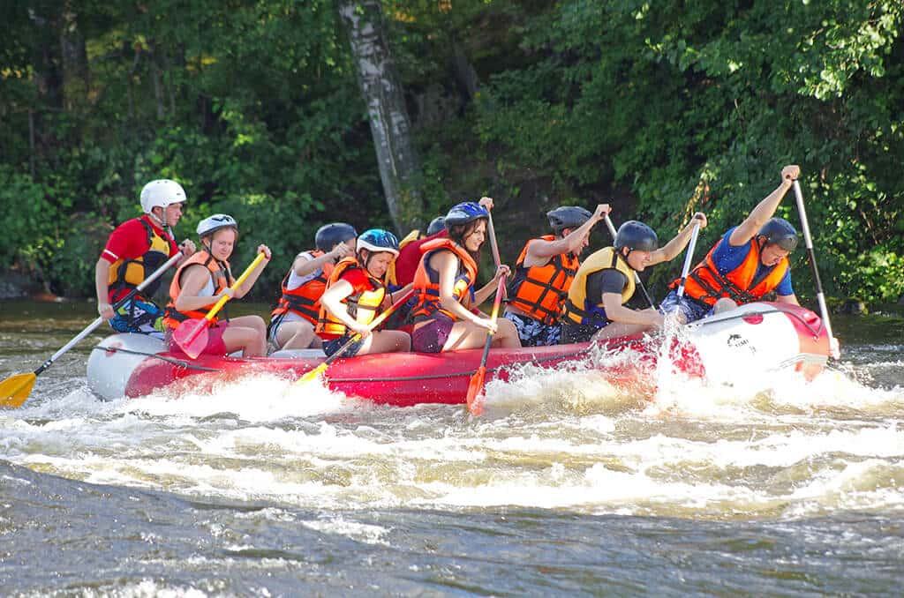
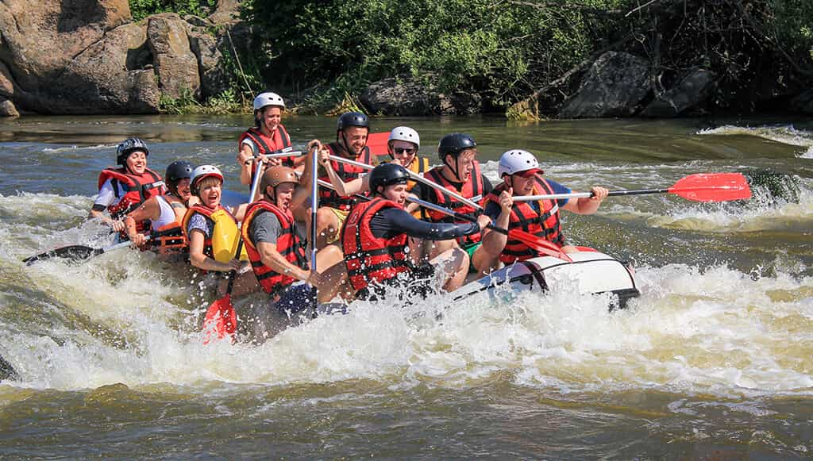
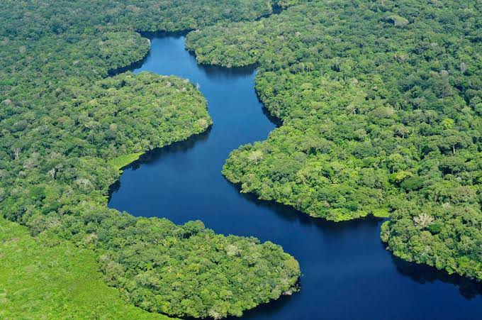
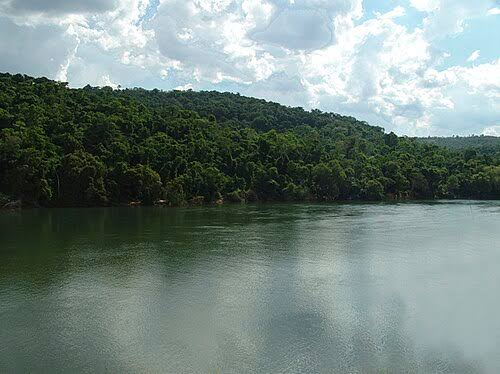
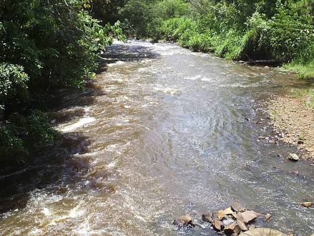
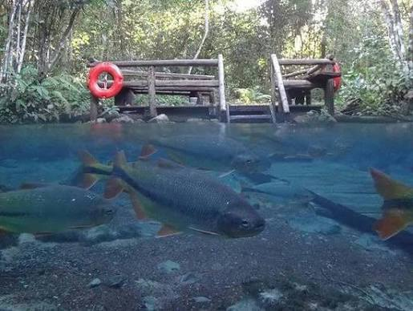
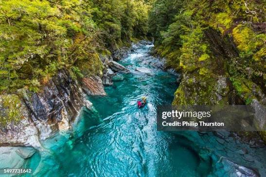

Nossa missão é proporcionar aventuras inesquecíveis, conectando pessoas à natureza através do rafting com segurança, diversão e responsabilidade.


Nossa missão é proporcionar aventuras inesquecíveis, conectando pessoas à natureza através do rafting com segurança, diversão e responsabilidade.
Fundada por apaixonados por esportes de aventura, a White Water Rafting começou organizando pequenos passeios locais e rapidamente se tornou uma referência em experiências emocionantes nas corredeiras.
imagens/history.jpgCom anos de experiência, expandimos nossos roteiros e nos tornamos referência em passeios de rafting.




